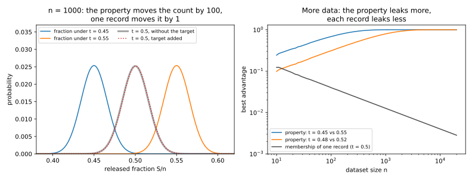
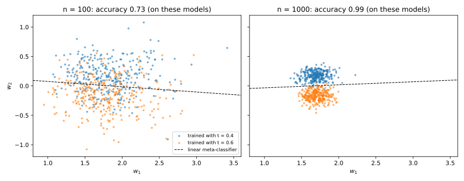
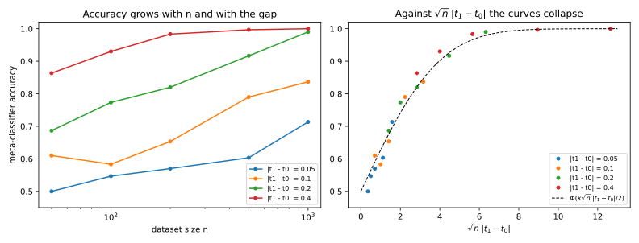
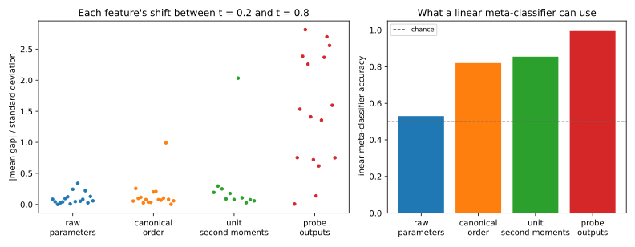

12 Property inference
12.1 Why this matters
A hospital trains a readmission model on its 1,000 patients and shares it with a research partner. Suppose you have checked that no attack on the model can tell, much better than a coin flip, whether any one patient was in the training set. The partner can still learn whether 45% or 55% of the hospital’s patients are over 65, and be right almost every time. A company that shares a fraud model may reveal the share of its customers in a market it has not announced. A model trained on data from a lab’s machines may reveal whether those machines had been patched.
None of these secrets is about a single record. Each is a property of the training set as a whole, a statistic of the dataset such as the fraction of records that belong to some subgroup. Property inference is the attack that recovers such a statistic from a trained model. Ateniese et al. (2015) introduced it, with attacks that learned whether a speech recognizer had been trained on speakers with a particular accent. Ganju et al. (2018) carried the attack to neural networks.
How can a model hide every record and still give away the mix of records? Think of the model as an average over its training records, and write \(n\) for the number of records. Changing one record moves an average by about \(1/n\). The training set is a random sample, and the luck of the draw moves an average by about \(1/\sqrt n\), the usual size of the error of an average. That is much larger than \(1/n\) when \(n\) is large.
A single record is therefore lost in the sampling noise, and that is why membership inference gets harder with more data. Changing the subgroup’s share is different, because it changes a fixed fraction of the records at once. The small effects of those records add up to a shift that does not shrink as \(n\) grows, while the noise does shrink. So property inference gets easier with more data. This chapter makes that argument precise, and shows how an attacker turns it into a working test by training models of its own. It ends with neural networks, whose raw weights hide the property unless the attacker describes the network in a way that ignores the order of its units.
12.2 The property game and its ceiling
Threat models and privacy games writes every attack as a game. A challenger trains a model with a hidden secret, and an adversary, the attacker, tries to guess the secret. In the property game the secret is one bit about the population that produced the training set. The records come from a population that mixes a majority group and a subgroup. The subgroup’s share of that population is one of two values, written \(t_0\) and \(t_1\), and the attacker knows both. Suri & Evans (2022) call this game distribution inference.
The game runs in four steps. First, the challenger flips a fair bit \(b\), which is 0 or 1 with probability one half each. Second, it draws \(n\) records independently from the population in which the subgroup’s share is \(t_b\), and trains a model on them. Third, the attacker receives either the model’s parameters, called white-box access, or only its answers to queries, called black-box access. The attacker also knows how records from each group are distributed, the dataset size, the two shares and the training algorithm. Fourth, the attacker outputs a guess of \(b\), and it wins if the guess is right. Because the bit is fair, an attacker who learns nothing wins exactly half the time.
The secret belongs to a group, not to a person, and that changes how the attack is scored. In Membership inference the attacker faces many target records, and a few records exposed with high confidence matter even if most are not. So there you report the true positive rate (TPR), the chance of saying 1 when the bit is 1. You report it at a low false positive rate (FPR), the chance of saying 1 when the bit is 0. Here each dataset carries a single secret, so the natural score is the accuracy, the probability that the guess equals \(b\).
Accuracy is tied to the advantage of Threat models and privacy games, the TPR minus the FPR. With a fair bit, half the games have \(b = 1\), and the attacker wins those with probability equal to the TPR. The other half have \(b = 0\), and the attacker wins those with probability one minus the FPR. Averaging the two halves gives an accuracy of \(\frac12(1 + \text{advantage})\). An attacker who ignores the model says 1 equally often in both worlds, so its advantage is 0 and its accuracy is one half. That is the coin-flip baseline.
12.2.1 The most any attacker can win
The attacker sees a view, such as the trained parameters. The view has one distribution when the bit is 0, written \(P\), and another when the bit is 1, written \(Q\). Some views are more likely in one world than in the other, and that difference is all the attacker has to go on. The best attack says 1 exactly on the views that are more likely under \(Q\), because saying 1 on such a view raises the TPR more than the FPR. This attack is the likelihood-ratio test.
Its advantage is the total variation (TV) distance between the two distributions. For each view \(x\), write \(p(x)\) for its probability when the bit is 0, and \(q(x)\) for its probability when the bit is 1. The TV distance is half the total absolute difference between the two, summed over all views, \[\mathrm{TV}(P, Q) = \tfrac12\sum_x|p(x) - q(x)|. \tag{12.1}\] For continuous views, such as parameters, the sum becomes an integral over densities. Hypothesis testing explains why no attack does better, and with a fair bit the best accuracy any attacker can reach is \(\frac12 + \frac12\mathrm{TV}(P, Q)\).
The attacker sees the model, not the data, and the model is computed from the data. Anyone holding the data could train the model themselves, with the same algorithm and fresh random choices, and run the attacker’s test on it. So no test on the model can beat the best test on the data. This is the data processing inequality of Divergences, which says that passing a view through a channel cannot increase its TV distance. A channel here is any random procedure that does not use the secret. It holds under one condition. The training algorithm’s own random choices, such as its initialization and the order of its minibatches, must not depend on the secret bit. A training run that could see the bit could write it into the weights, and then the model could reveal more than the data do.
Put together, the two facts give a ceiling that holds for every attacker: \[\text{advantage} \le \mathrm{TV}\big(\text{model under } t_0, \text{model under } t_1\big) \le \mathrm{TV}\big(\text{data under } t_0, \text{data under } t_1\big). \tag{12.2}\] The first inequality says that no attack on the model beats the likelihood-ratio test. The second says that training cannot add information about the share.
12.2.2 When the group is visible: the count
The right-hand side of Equation 12.2 becomes a number you can compute under one more condition, that each record shows which group it comes from. Each record is a subgroup record with probability equal to the share, and the features of a record from either group are drawn the same way in both worlds. So when you compare how likely a dataset is under the two shares, the features cancel, and only the number of subgroup records makes a difference. Call that count \(S\).
The count carries everything in the data that bears on the share, so it is called a sufficient statistic for the share (Divergences). Nothing else in the data helps to tell the shares apart. So the TV distance between the two distributions of the dataset equals the one between the two distributions of the count. The records are drawn independently, so the count is binomial. For every model trained on the data, \[\text{advantage} \le \mathrm{TV}\big(\mathrm{Bin}(n, t_0), \mathrm{Bin}(n, t_1)\big). \tag{12.3}\]
So releasing the count is the worst case. The count already carries everything the data say about the share, so no model trained on the data can leak more, and releasing the count itself reaches the ceiling. A model that never sees the group leaks less, by an amount you can measure. Deleting the group column does not break the bound, because a dataset without the column is computed from the dataset with it. The bound may just no longer be reached.
The game also says what the attacker needs. It hands the attacker the two groups’ distributions and the training algorithm. In practice this means auxiliary data from both groups, and the ability to train models the way the victim does. This is the same assumption that makes shadow models work in Membership inference, where the attacker trains copies of the victim’s pipeline on data it controls.
You may ask whether this is an attack at all. Learning that smokers get more lung cancer is the purpose of a medical study, not a breach. Property inference is a harm only when the property describes the data owner rather than the world. The share of a company’s customers in a region is such a property, and so are the demographics of one hospital’s patients. When the dataset is a small sample from a public population, its property is public knowledge anyway.
The game has variants. The secret can be a real number to estimate, or whether any record with a given feature is present. Some games fix the number of subgroup records instead of drawing it at random. With a visible group, the ceiling is then 1, because the count itself reveals the bit, and only training noise and a hidden group make the attack hard. A stronger attacker, one who can add a few records of its own to the training set, can make a property far easier to infer (Mahloujifar et al. 2022).
Return to the hospital’s secret about its patients over 65. If age group is part of each record, Equation 12.3 caps the advantage of every attack on every model trained on the data at 0.9985. The count has mean 450 in one world and 550 in the other. Its standard deviation is about 15.7, so the two means are more than six standard deviations apart and the two distributions barely overlap. An attacker who can read the count off the model reaches this ceiling, and with a fair bit it is right more than 99.9% of the time.
With only 100 patients, the two means of the count are only 10 apart and its standard deviation is about 5. The distributions then overlap much more, and the ceiling falls to 0.6827.
12.3 Why a property leaks when no record does
The simplest model of all is a training algorithm that releases the count of subgroup records. Two attackers can look at the same release. One asks whether a target record, a member of the subgroup, is in the data. The other asks whether the data were drawn with share \(t_0\) or \(t_1\). For a count, both best advantages can be computed exactly, and they move in opposite directions as \(n\) grows. This makes the argument of the opening section exact.
Start with membership. The dataset holds \(n - 1\) records from a population with subgroup share \(t\), plus one more, which is either the target or a fresh record. Write \(X\) for the count of subgroup records among the \(n - 1\) others. The target always adds 1 to the count, while a fresh record adds 1 only when it comes from the subgroup, a fraction \(t\) of the time. In that fraction the count is \(X + 1\) in both worlds, so only the remaining fraction \(1 - t\) of games carries any signal, and the advantage is scaled down by that factor. In those games the attacker must tell \(X\) from \(X + 1\).
A binomial distribution has a single peak. For such a distribution, the TV distance between a count and the same count shifted by one equals the probability of the most likely value. The single peak is needed, because a count that took only the values 0 and 2 would not overlap with its shift at all. With many records the binomial is close to a normal distribution, so its most likely value has probability about \(1/(\sqrt{2\pi}\,s)\), where \(s\) is its standard deviation (Probability distributions). So the best membership advantage is \[\mathrm{Adv}_{\mathrm{mem}} = (1 - t)\max_k\Pr[X = k] \approx \frac{1 - t}{\sqrt{2\pi(n - 1)t(1 - t)}}. \tag{12.4}\] It falls like \(1/\sqrt n\), because one extra record is measured against a spread that grows like \(\sqrt n\).
Now the property. Under the two hypotheses, the fraction of subgroup records centres on \(t_0\) or on \(t_1\). Its standard deviation is about \(\sqrt{\bar t(1 - \bar t)/n}\), where \(\bar t = \frac{t_0 + t_1}2\) is the midpoint share. Using the midpoint’s spread for both hypotheses is an approximation that is good when the gap between the shares is small.
Approximate both distributions of the fraction by normals with that common spread. Two normals with the same spread are best told apart by a threshold halfway between their means. Write \(\Phi\) for the standard normal distribution function, the chance that a standard normal draw is at most a given value. If the threshold lies \(z\) standard deviations from each mean, the test’s TPR is \(\Phi(z)\) and its FPR is \(1 - \Phi(z)\), so its advantage is \(2\Phi(z) - 1\). Here \(z\) is half the distance between the two centres, which gives \[\mathrm{Adv}_{\mathrm{prop}} = \mathrm{TV}\big(\mathrm{Bin}(n, t_0), \mathrm{Bin}(n, t_1)\big) \approx 2\Phi\Big(\frac{\sqrt n\,|t_1 - t_0|}{2\sqrt{\bar t(1 - \bar t)}}\Big) - 1. \tag{12.5}\] The argument of \(\Phi\) is that \(z\), and it grows like \(\sqrt n\), so the advantage rises towards 1. Because \(n\) and the gap enter only through \(\sqrt n\,|t_1 - t_0|\), doubling the gap has the same effect as multiplying \(n\) by 4.
Table 12.1 puts numbers on both formulas. The property attacker tells share 0.45 from share 0.55, and the membership attacker faces a population share of one half. The approximations are close even at 100 records.
| \(n\) | Property, exact | Property, Equation 12.5 | Membership, exact | Membership, Equation 12.4 |
|---|---|---|---|---|
| 100 | 0.6827 | 0.6827 | 0.0398 | 0.0401 |
| 1,000 | 0.9985 | 0.9984 | 0.0126 | 0.0126 |
| 10,000 | 1.0000 | 1.0000 | 0.0040 | 0.0040 |
At 10,000 records, the attacker who asks about one patient has an advantage of 0.0040. With a fair bit, it is right with probability 0.502. The attacker who asks about the share of patients over 65, by contrast, is never wrong to four decimals. The data, the release and the attacker’s knowledge are the same, and only the question differs. Figure 12.1 shows both advantages against \(n\). The membership advantage falls like \(1/\sqrt n\), while the property advantage climbs to 1, sooner for a larger gap between the shares.

Neither argument is special to counts. An estimator is any quantity computed from the data, such as a model’s parameters, and most estimators behave like averages. Each record pulls an average by its own contribution, called its influence, divided by \(n\). So one record’s pull shrinks like \(1/n\), while the sampling noise shrinks only like \(1/\sqrt n\). A change of share moves the centre of the estimate by a fixed distance instead, so measured in units of the noise its shift grows like \(\sqrt n\).
Put plainly, a property is a group of records. Moving from share \(t_0\) to share \(t_1\) changes about \(n|t_1 - t_0|\) records, which for the hospital is 100 of its 1,000 patients. A protection measured one record at a time says little about a change to 100 records at once. Differential privacy, the defence of Part 3, protects one record at a time. Its group-privacy property covers a group only with a guarantee that weakens as the group grows (Properties of differential privacy). So hiding the property means hiding the population’s mix itself. Only a released statistic that is noisy on the scale of \(n|t_1 - t_0|\) records, not of one record, pushes the property advantage down. That much noise also destroys what the statistic was for.
12.4 Shadow models and meta-classifiers
For a real model, nobody can write down the distribution of the trained parameters, so the likelihood-ratio test is out of reach. Ateniese et al. (2015) gave the recipe that every later attack uses: if you cannot compute the two distributions, sample from them. The attacker draws many datasets with each share from its auxiliary data, and trains a shadow model on each, exactly as the victim trains. It then trains a classifier, the meta-classifier, to tell the two shares apart from the shadow models’ parameters, and applies it to the victim’s model. This is the shadow-model idea of Membership inference, with whole models as the data points.
That leaves two questions, which meta-classifier to train and how accurate it can be. Both have an answer when the trained parameters are approximately normal, as they are for many models.
12.4.1 When the parameters are normal, the best test is linear
Suppose the parameters are normal under both hypotheses, with the same covariance matrix \(\Sigma\) but different means. To see how hard the two distributions are to tell apart, start with a single parameter, where the answer depends on how far apart the means are in standard deviations. For many parameters, the noise can be larger in some directions than in others. A shift along a noisy direction then counts for less than the same shift along a quiet one, because more of it is hidden by the noise. The Mahalanobis distance measures the shift between the means \(m_0\) and \(m_1\) in exactly this way: \[\Delta = \sqrt{(m_1 - m_0)^\top\Sigma^{-1}(m_1 - m_0)}. \tag{12.6}\] For a single parameter, it is the distance between the means divided by the standard deviation.
Because the covariance is shared, the log-likelihood ratio of the two normals turns out to be a linear function of the parameters, as the full edition shows. So the likelihood-ratio test is a linear discriminant. It says 1 when the parameters lie on \(m_1\)’s side of a flat boundary halfway between the two means, and the direction across that boundary is \(\Sigma^{-1}(m_1 - m_0)\). As for a single parameter, its accuracy with a fair bit depends only on the Mahalanobis distance: \[\Phi(\Delta/2). \tag{12.7}\] The condition of a shared covariance matters, because with different covariances the log-likelihood ratio keeps a quadratic part, and the best test is curved rather than flat.
Are trained parameters normal? A model fitted by minimizing an average loss over its records is called an M-estimator, and for large \(n\) its parameters are approximately normal. Write \(\theta(t)\) for the population fit, the model that infinitely many records with share \(t\) would give. At the fitted parameters the average gradient of the loss is zero. Near the population fit the gradient is close to linear in the parameters. So the fitted parameters differ from the population fit by about a fixed matrix times the average of the per-record gradients, each taken at the population fit. That average is approximately normal by the central limit theorem, because the records are independent. The parameters therefore scatter normally around \(\theta(t)\), with a covariance that shrinks like \(1/n\), written \(\Sigma_1(t)/n\).
Here \(\Sigma_1\) is the covariance the fit would have with a single record, and two matrices set it. The first is the average curvature of the loss at the population fit, written \(H\). A sharply curved loss pins the minimizer down, so more curvature means less noise. The second is the covariance of the per-record gradients there, written \(G\), which measures how much each record pulls in its own direction. The fixed matrix of the previous paragraph is the inverse of \(H\), up to sign, and applying it on both sides of the gradients’ covariance gives \(\Sigma_1 = H^{-1}GH^{-1}\). This is called the sandwich covariance, because \(G\) sits between two copies of \(H^{-1}\). These are large-\(n\) results. When \(n\) is small, or training stops before the average gradient reaches zero, the parameters can be skewed, and the linear meta-classifier is then no longer the best one.
12.4.2 The accuracy of the attack and the scaling law
Under the two hypotheses the parameters are approximately normal around \(\theta(t_0)\) and \(\theta(t_1)\). When their covariances are close, use one shared covariance for both. Write \(\bar\Sigma_1\) for the average of the two per-record covariances, so that the shared covariance is \(\bar\Sigma_1/n\). The best attack is then a linear discriminant, and its accuracy is \(\Phi(\Delta/2)\), where the Mahalanobis distance is now \[\Delta = \sqrt{n\,\big(\theta(t_1) - \theta(t_0)\big)^\top\bar\Sigma_1^{-1}\big(\theta(t_1) - \theta(t_0)\big)}. \tag{12.8}\] The factor \(n\) appears because the noise shrinks like \(1/n\) while the shift between the population fits stays fixed.
For a small gap between the shares, the population fit changes almost linearly with the share. Its shift is then about its slope \(\theta' = d\theta/dt\) at the midpoint share, times the gap. This gives the scaling law \[\text{accuracy} \approx \Phi\big(\kappa\sqrt n\,|t_1 - t_0|/2\big), \qquad \kappa = \sqrt{\theta'^\top\Sigma_1^{-1}\theta'}. \tag{12.9}\] The constant \(\kappa\) is how fast the model moves with the share, measured in units of its per-record noise, with both evaluated at the midpoint share. For the released count, \(\kappa\) is \(1/\sqrt{\bar t(1 - \bar t)}\), which is 2 at a midpoint of one half. With that \(\kappa\), the accuracy \(\Phi(\Delta/2)\) becomes the advantage of Equation 12.5, since advantage is twice the accuracy minus 1.
Two numbers set the leak. The slope \(\theta'\) says how much the property moves what the model learns, and \(\Sigma_1\) says how noisy that is. If the property does not change what the model fits, the slope is zero and, to first order, nothing leaks, however large \(n\) is. If it does, the leak is a side effect of fitting the data well, and no amount of care in the training code removes it.
The constant also compares any model with the count. The accuracy depends on \(\kappa\sqrt n\), so a model with a smaller \(\kappa\) on \(n\) records leaks as much as the count would on fewer records. Matching the two values of \(\kappa\sqrt n\) shows that the count needs only a fraction \((\kappa\sqrt{\bar t(1 - \bar t)})^2\) of them. Suri & Evans (2022) measure leakage in exactly these units, as the number of records an attacker would need to see directly to learn as much as the model reveals.
12.4.3 Example: a logistic regression that never sees the group
Each record has two features drawn from a standard normal distribution, and a label. In the majority, the chance of a positive label rises with both features, while in the subgroup it rises with the first feature and falls with the second. Think of a symptom that raises risk in most patients and lowers it in a minority. The group is never a feature, so a logistic regression sees only the two features and the label. It fits an intercept, a weight \(w_1\) for the first feature and a weight \(w_2\) for the second. It is trained by Newton’s method with a tiny ridge penalty, a small cost on large weights that keeps the fit stable.
| \(t\) | 0 | 0.25 | 0.5 | 0.75 | 1 |
|---|---|---|---|---|---|
| \(w_1(t)\) | 2.000 | 1.767 | 1.704 | 1.767 | 2.000 |
| \(w_2(t)\) | 1.000 | 0.442 | 0.000 | −0.442 | −1.000 |
Table 12.2 shows the population fit, which the full edition’s script computes by numerical integration over the features. The property moves \(w_2\). At share one half the two groups’ rules cancel in \(w_2\), because half the population pushes it up and half pushes it down. As the subgroup grows its rule wins, so \(w_2\) turns negative, with slope \(-1.704\) at the midpoint. The weight \(w_1\) also changes with the share, but symmetrically about the midpoint, so it is flat there and carries no signal, and the intercept is 0 for every share.
The noise of \(w_2\), its entry of \(\Sigma_1\), is 6.94 at the midpoint, and a symmetry of the population makes \(w_2\) uncorrelated with the other two parameters. Two thousand models trained at share one half on 1,000 records each match the predicted spread to within about 5%. With one useful parameter, Equation 12.9 reduces to the slope of \(w_2\) over its standard deviation, so \(\kappa = 1.704/\sqrt{6.94} = 0.647\), against 2 for the count. The model therefore leaks the property as well as about one record in ten would, \((0.647/2)^2 = 0.105\), although it never sees the group.
Figure 12.2 shows trained models for shares 0.4 and 0.6. At 100 records the two clouds of parameters overlap. At 1,000 records they have separated along \(w_2\), and a line splits them.

Now the attack itself. For each dataset size and gap, with the two shares centred on one half, the script trains 150 shadow models per hypothesis. It fits a linear discriminant on their three parameters and measures its accuracy on 150 fresh target models per hypothesis. Each accuracy is an average over 300 right-or-wrong outcomes, so its standard error is at most 0.029.
| \(n\) | gap 0.05 | gap 0.1 | gap 0.2 | gap 0.4 |
|---|---|---|---|---|
| 50 | 0.523 (0.546) | 0.520 (0.590) | 0.653 (0.676) | 0.830 (0.818) |
| 100 | 0.523 (0.564) | 0.670 (0.627) | 0.733 (0.741) | 0.863 (0.901) |
| 200 | 0.503 (0.590) | 0.670 (0.676) | 0.803 (0.819) | 0.957 (0.965) |
| 500 | 0.633 (0.641) | 0.787 (0.765) | 0.910 (0.926) | 0.997 (0.998) |
| 1,000 | 0.713 (0.695) | 0.867 (0.847) | 0.980 (0.979) | 1.000 (1.000) |
Most cells of Table 12.3 agree with the prediction to within two standard errors. The exceptions are small effects, with at most 200 records and a gap of at most 0.1. There the noise in the 300 shadow models swamps the shift the meta-classifier is trying to find, so it estimates the direction of its boundary badly. The attack is then weaker than the best test, but the model is no safer. So when you know the population well enough to compute \(\kappa\), as here, report the predicted accuracy next to the measured one. The measured one can fall short of what the model leaks.
The scaling law holds too. Plotted against \(\sqrt n\,|t_1 - t_0|\), the four gaps fall on one curve, the prediction of Equation 12.9 with \(\kappa = 0.647\) (Figure 12.3). For example, a gap of 0.05 at 1,000 records gives a product of 1.58. A gap of 0.1 at 200 records gives 1.41, so the two are about equally easy to detect.

Real attacks are larger but have the same steps. Ganju et al. (2018) attack networks trained on census income data and other datasets, with many shadow models per hypothesis and a neural network as the meta-classifier.
12.5 Permutation invariance
A logistic regression has one parameter vector per function, because different weights give different predictions. A neural network has many. Swap two hidden units, together with their incoming and outgoing weights, and the network computes exactly the same function. Ganju et al. (2018) observed that a meta-classifier fed the flattened weights then does poorly. It must learn the same pattern in every position of the weight vector, called a slot, and in every order.
Take a network with one hidden layer of units that use the tanh activation, and write \(h\) for the number of hidden units. For the unit numbered \(j\), collect its incoming weights, its bias and its outgoing weight into a vector \(u_j\). The function tanh is odd, which means that it turns a negated input into a negated output. Flip the signs of a unit’s incoming weights and bias, and its activation flips sign. Flip its outgoing weight too, and the unit’s contribution to the output flips back, so the network’s function is again unchanged. Reordering the units and flipping signs therefore gives a typical network \(h!\,2^h\) parameter vectors for the same function. For four units that is \(4! \times 2^4 = 384\).
The symmetry of the function carries over to the distribution of the trained weights under two conditions. The first is that the random initialization treats every reordering and sign flip alike, as it does when the entries are drawn independently from a distribution symmetric about zero. The second is that training is gradient descent. The loss is unchanged by the symmetry, so gradient descent from a transformed start ends at the transformed end. A transformed result is therefore as likely as the original one, under either hypothesis.
The property shows in which units the network has, not in which slot holds which unit, and this has three consequences. First, each slot holds a unit chosen at random from the network’s units, with a random sign, so averaging slot by slot washes the property out. Second, a unit and its sign-flipped copy are equally likely, so every raw parameter has mean zero under both hypotheses. The linear discriminant puts weight on a feature only where the means differ, so on raw weights it can use nothing except the output bias, which no symmetry touches. Third, features that combine all units alike are unchanged by any reordering or sign flip, and they keep information that the raw means lose. An example is the matrix \(\sum_ju_ju_j^\top\), which adds up, over the units, the products of every pair of entries within each unit.
The sign argument needs tanh to be odd. A network of ReLU units has no sign symmetry, only the reorderings. The reorderings force every unit slot to have the same mean, but that common mean can differ between the two shares, so the raw means need not vanish.
There are three ways to undo the symmetry, and with raw weights as the baseline they give four representations to compare. A canonical form picks one parameter vector per function. It flips each unit so that its outgoing weight is positive, and then sorts the units by that weight. Ganju et al. propose sorting, and since their networks use ReLU units, sorting alone gives them the canonical form, which beats raw weights in their experiments. Sorting is fragile, because two units with nearly equal outgoing weights swap places from one network to the next.
A set representation passes each unit’s parameters through the same function, adds the results, and applies a second function to the sum. The sum does not depend on the order of the units. Ganju et al. use this form, from DeepSets (Zaheer et al. 2017), with both functions learned. The matrix \(\sum_ju_ju_j^\top\) is a case of it, with each unit mapped to \(u_ju_j^\top\), and it is also unchanged by sign flips because \((-u_j)(-u_j)^\top = u_ju_j^\top\). A linear meta-classifier on the plain sum \(\sum_ju_j\) would fail for tanh networks, because every \(u_j\) has mean zero and so does their sum. Deeper networks have the same problem at each layer, so a set representation is applied layer by layer.
Probe outputs, the network’s answers on fixed inputs, need no correction. A function does not depend on how it is written down, so these features are unchanged by any symmetry automatically, and they need only black-box access.
Table 12.4 compares the four representations on tanh networks with four hidden units, each trained on 200 records. The two shares are 0.2 and 0.8. On each side, 150 shadow networks fit the linear discriminant, and the same number of fresh target networks measure its accuracy. To see which features carry signal, the table also reports each representation’s largest standardized mean gap. For each feature, this is the difference of its means under the two shares, divided by its pooled standard deviation.
| Representation | Features | Largest standardized mean gap | Accuracy |
|---|---|---|---|
| Raw parameters | 17 | 0.34 | 0.497 |
| Canonical order (flip so \(v_j > 0\), sort by \(v_j\)) | 17 | 0.66 | 0.807 |
| Unit second moments \(\sum_j u_ju_j^\top\) | 11 | 2.24 | 0.877 |
| Outputs on 16 probe inputs | 16 | 2.81 | 1.000 |
Raw parameters are at chance, as the vanishing means predict. Their largest standardized gap, 0.34, is about what noise alone produces in the largest of 17 features. Canonical order recovers most of the signal, and one feature carries most of it. The left panel of Figure 12.4 shows this in a separate, smaller run. Second moments do better with fewer features, because they need no tie-breaking between units with nearly equal outgoing weights. Probe outputs are best. The property changes the function the network computes, and probe outputs measure that function directly.

So a meta-classifier at chance on raw weights says that the representation is wrong, not that the model is safe. The table also corrects an intuition about access. Whoever holds the weights can compute any query answer, so white-box access is never weaker for the best attack. That says nothing about a fixed simple attack, for which the representation can matter more than the access. Here black-box probes beat raw weights. A model served only through an API is therefore not safe from property inference, and Zhang, Tople & Ohrimenko (2021) attack properties through queries alone.
12.6 Code
The ceiling of Equation 12.3 and the two advantages of Section 12.3 take a few lines:
from math import erf, exp, lgamma, log, sqrt
def binom_pmf(n: int, t: float) -> list[float]:
"""Pr[Bin(n, t) = k] for k = 0..n, in log space so that large n does not overflow."""
return [exp(lgamma(n + 1) - lgamma(k + 1) - lgamma(n - k + 1) + k * log(t) + (n - k) * log(1 - t)) for k in range(n + 1)]
def property_ceiling(n: int, t0: float, t1: float) -> float:
"""Best advantage of any property attack when the group is visible: TV(Bin(n, t0), Bin(n, t1))."""
return 0.5 * sum(abs(p - q) for p, q in zip(binom_pmf(n, t0), binom_pmf(n, t1)))
def property_normal(n: int, t0: float, t1: float) -> float:
"""The normal approximation 2 Phi(sqrt(n) |t1 - t0| / (2 sqrt(tbar (1 - tbar)))) - 1."""
tbar = (t0 + t1) / 2
z = sqrt(n) * abs(t1 - t0) / (2 * sqrt(tbar * (1 - tbar)))
return erf(z / sqrt(2)) # equals 2 Phi(z) - 1
def membership_best(n: int, t: float) -> float:
"""Best advantage for one subgroup record from the same count: (1 - t) max_k Pr[Bin(n - 1, t) = k]."""
return (1 - t) * max(binom_pmf(n - 1, t))
print(f"{property_ceiling(100, 0.45, 0.55):.4f} {property_normal(100, 0.45, 0.55):.4f}") # 0.6827 0.6827
print(f"{property_ceiling(1000, 0.45, 0.55):.4f} {property_normal(1000, 0.45, 0.55):.4f}") # 0.9985 0.9984
print(f"{membership_best(100, 0.5):.4f} {membership_best(10000, 0.5):.4f}") # 0.0398 0.0040The full edition’s script runs the shadow-model attacks and reproduces every number in this chapter:
uv run python code/part02-attacks/property_inference.py12.7 Cheat sheet
| Result | Formula | Notes |
|---|---|---|
| Score | Accuracy \(= \frac12(1 + \mathrm{TPR} - \mathrm{FPR})\) | One secret per dataset; baseline \(\frac12\) |
| Ceiling on any attack | \(\mathrm{Adv} \le \mathrm{TV}(\text{models}) \le \mathrm{TV}(\text{data})\) | Training randomness must not depend on the bit |
| Ceiling, group visible | \(\mathrm{TV}(\mathrm{Bin}(n, t_0), \mathrm{Bin}(n, t_1))\) | Reached by releasing the count |
| Property, released count | \(2\Phi\big(\sqrt n\,\lvert t_1 - t_0\rvert/(2\sqrt{\bar t(1 - \bar t)})\big) - 1\) | \(\to 1\) as \(n\) grows |
| Membership, released count | \((1 - t)\max_k\Pr[\mathrm{Bin}(n - 1, t) = k] \approx (1 - t)/\sqrt{2\pi(n - 1)t(1 - t)}\) | \(\to 0\) like \(1/\sqrt n\) |
| Two normals, shared covariance | Best accuracy \(\Phi(\Delta/2)\), linear test along \(\Sigma^{-1}(m_1 - m_0)\) | \(\Delta\) the Mahalanobis distance |
| Trained parameters | \(\approx \mathcal N(\theta(t), H^{-1}GH^{-1}/n)\) | Minimizers of an average loss, large \(n\) |
| Meta-classifier accuracy | \(\Phi(\kappa\sqrt n\,\lvert t_1 - t_0\rvert/2)\), \(\kappa = \sqrt{\theta'^\top\Sigma_1^{-1}\theta'}\) | Small gap; the count has \(\kappa = 1/\sqrt{\bar t(1 - \bar t)}\) |
| Hidden-unit symmetry | \(h!\,2^h\) parameter vectors per tanh network | Raw means vanish; use invariant features |
Rules of thumb
- Property inference gets easier with more data, and membership inference harder. What matters for a property is \(\sqrt n\,|t_1 - t_0|\).
- A property changes about \(n|t_1 - t_0|\) records at once, so defences sized for one record do not cover it.
- Removing the group column does not remove the property, because whatever correlates with the group still moves the model.
- Train the meta-classifier on a representation that respects the network’s symmetries, such as canonical order, sums over units or probe outputs.
- Report accuracy for property attacks, and when the population is known well enough to compute \(\kappa\), the predicted accuracy next to it.
12.8 Further reading
- Ganju, Wang, Yang, Gunter & Borisov, “Property Inference Attacks on Fully Connected Neural Networks using Permutation Invariant Representations” (CCS 2018): the practical attack on neural networks, neuron sorting and the DeepSets meta-classifier.
- Suri & Evans, “Formalizing and Estimating Distribution Inference Risks” (PoPETs 2022): the property game as a test between two training distributions, and leakage measured in records.
- Zhang, Tople & Ohrimenko, “Leakage of Dataset Properties in Multi-Party Machine Learning” (USENIX Security 2021): black-box property inference, including properties of attributes that were removed from the training data.
- Mahloujifar, Ghosh & Chase, “Property Inference from Poisoning” (IEEE S&P 2022): how a few injected records make a property far easier to infer.
Derivations. Every result in this chapter is derived step by step in the full edition’s chapter, except that the approximate normality of trained parameters is derived only in outline there, citing van der Vaart (1998) for its conditions, and the results of Ateniese et al. (2015), Ganju et al. (2018), Zaheer et al. (2017), Zhang, Tople & Ohrimenko (2021), Suri & Evans (2022) and Mahloujifar et al. (2022) are cited.